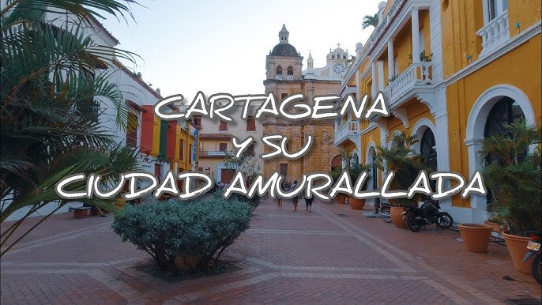
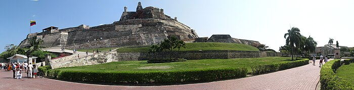
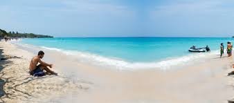

Cartagena de Indias is a vibrant city where history meets tropical charm. Known for its colorful colonial architecture, cobblestone streets, and lively plazas, this UNESCO World Heritage Site offers a journey back in time. Stroll through the walled Old Town, explore the imposing Castillo San Felipe de Barajas, or relax on the pristine beaches of nearby Islas del Rosario.
Beyond its historical allure, Cartagena buzzes with modern culture. Enjoy world-class cuisine, sip on refreshing tropical drinks, or dance the night away to the rhythms of salsa and champeta. Whether you're seeking adventure, romance, or relaxation, Cartagena promises an unforgettable experience filled with warmth and authenticity.
Old Town (Ciudad Amurallada)
Wander through cobblestone streets lined with colorful colonial buildings, charming plazas, and boutique shops. Don’t miss Plaza Santo Domingo and Plaza de los Coches for iconic landmarks.

Castillo San Felipe de Barajas
This majestic fortress is a testament to Cartagena’s colonial defense system. Explore its tunnels and enjoy panoramic views of the city.

Playa Blanca
A picturesque beach on Barú Island, perfect for a relaxing day soaking up the sun and swimming in turquoise waters.
